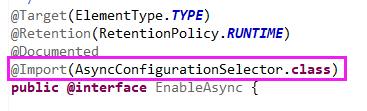

原文连接:https://www.cnblogs.com/lixinjie/p/taste-spring-010.html
其实对Spring的了解达到一定程度后，你就会发现，无论是使用Spring框架开发的应用，还是Spring框架本身的开发都是围绕着注解构建起来的。
空口无凭，那就说个最普通的例子吧。
在Spring中要启用一项XXX功能，标准做法就是用@EnableXXX这种“启用”类型的注解。
那么这种类型的注解一般都做了什么呢？分析一下吧。
看过本号文章的人都知道，Spring的核心就是bean定义和bean，如果我想增加某方面的功能，只需写若干个类，并作为bean定义注册到容器中即可。
因此“启用”类型的注解表面上看起来是启用某项功能，背后其实就是注册了一系列相关的bean定义到容器中。
大家都非常熟悉的，启用事务管理功能的注解，@EnableTransactionManagement，如下图01：
还有启用定时任务的注解，@EnableScheduling，如下图02：

还有启动异步支持的注解，@EnableAsync，如下图03：

这类注解其实很多，就先看这三个吧。
相信大家已经发现了一个规律，这三个注解在定义时都使用@Import注解引入了某个类，最终目的当然是为了注册bean定义。
之前的文章中已经说过多遍，这种方法叫做通过编程的方式（或称写代码的方式）注册bean定义。
这种方式非常的灵活，因为@Import注解引入的类其实是两个著名接口的实现类。
这两个接口，之前也提到过很多次了，就是：
ImportSelector
ImportBeanDefinitionRegistrar
在实现接口时，可以按照自己关注的因素，来自主可控的（或称有选择性的）注册bean定义，这就是灵活性的原因。
@Import除了可以引入这两个接口外，还可以引入被@Configuration注解标注的类或没有被注解标注的普通类。
再次赘述一下这种方式的典型用法：
用于Spring框架自身的开发，以及第三方框架与Spring的整合开发。
熟悉Spring的朋友都应该知道，@EnableXXX注解和@Import注解都必须（直接或间接）和@Configuration注解放到一起才会起作用。
这是Spring规定的，主要是和Spring的源码实现有关。
所以整体就是，@Configuration类引入了@EnableXXX注解或@Import注解，@EnableXXX注解又引入了@Import注解。
而@Import注解又引入了那两个接口的实现类以编程方式注册bean定义，这里注册的bean定义同样还可以是@Configuration类。
@Import注解还可以再次引入@Configuration类。因此，我们成功的从@Configuration类出发后又回到了@Configuration类。
然后可以继续重复这个动作，一直进行下去。
这就像原子弹爆炸的链式反应一样，从最初的一个引爆点，然后开启逐个自我引爆的模式，越来越大，一发不可收拾。
所以Spring就是采用这种模式，最初的引爆点必须是一个@Configuration类，自我的引爆模式是@Import注解。
从最初的那一个基点，向容器中引入新的类，再以引入的新类作为基点，再次引入新的类，这种爆炸模型，非常强大。
除了@Import可以引入新类外，@ComponentScan注解也以扫描jar包的方式引入新的类。只不过扫描的方式通常用于用户程序而非框架开发。
可见Spring程序就是围绕着注解构建起来的，从最初的一个@Configuration类，配合使用@Import和@ComponentScan，逐渐壮大。
所以最初的这一个@Configuration类，是在应用启动前，显式的（或称特意的）注册到容器中的。
SpringBoot就是非常标准的这个样子的。它的主类就是一个@Configuration类，然后再使用@Import和@ComponentScan注解。
看看下面的注解源码，确实是这样子的，如下图0405：

终于可以下结论了：
@Configuration就是注解之王，是老大，其余的注解围绕在它周围，是小弟们。
按照江湖规矩，老大得罩着小弟们，所以负责处理@Configuration注解的类也要负责处理其它的注解。
编程新说注：究竟有哪些注解可以和@Configuration一起使用，在上一篇文章中已写明。
目前看来，主要是这样的：
在容器启动前使用编程的方式可以注册bean定义，如SpringBoot的主类。
在容器启动后，@Import和@ComponentScan都可以注册bean定义，@Bean方法也可以。
虽然它们功能相似，但侧重点其实是不同的，当然可以放到一起使用，但必须做到心中有数。
如果使用不当的话，可能会发生“重叠”，如一个类即被引入了，也被扫描了。
而且还可能被引入多次，扫描多次，当然，即使这样也不一定报错，因为Spring做了处理。
Spring采用了类似先入为主的做法：
首先是容器启动前通过编程方式注册的类。这些类在后面无论是被扫描还是被引入，都不会再被注册。
其次是如果先通过扫描方式注册的类，引入时不再注册。如果先通过引入方式注册的类，扫描时不再注册。
最后是如果先通过扫描方式注册的类，再次扫描时不再注册。如果先通过引入方式注册的类，再次引入时不再注册。
这就像幂等处理一样，给上层用户留有较宽的余地，在最终使用时没有那么严格。多了一些随意。
编程新说注：在显式注册bean定义时，如果beanName已存在，会抛出异常。
如果这些注解在一起出现的话，注册bean定义也是有先后顺序的：
第一，容器启动前，注册的@Configuration类的bean定义。
编程新说注：下面的这些内容都是依附于@Configuration类的。
第二，@ComponentScan注解扫描的bean定义。
第三，使用ImportSelector接口引入的bean定义（非ImportBeanDefinitionRegistrar接口的实现类）。
第四，使用@Import引入的普通类的bean定义。
第五，类的@Bean方法引入的bean定义。
第六，使用@ImportResource注解引入的XML文件里的bean定义。
第七，使用ImportBeanDefinitionRegistrar接口引入的bean定义。
第八，@Configuration类实现的接口里的@Bean方法（默认方法）。
第九，@Configuration类的父类
接着就是把父类当作新的@Configuration类，再次重复第二到第九。
整个bean定义的注册过程，就是以容器为依托，一遍一遍的执行，直到容器中的bean定义再无增多为止。
下面就描述其中的一遍：
第一，从容器中拿出尚未处理过的所有@Configuration类
第二，从这一批@Configuration类中解析出所有需要被注册的类
第三，将这一批@Configuration类标记为已处理过
第四，将刚刚解析出来的类进行bean定义注册，这些类里面可能还含有@Configuration类。
接下来进行循环执行即可。直到某一次执行完后，容器中的bean定义数量没有变化，表明已全部处理完毕。
再说一个外部类和内部类的事情，颇有意思：
@Configuration
class Outter {
@Configuration
static class Inner {
}
}
先来看两个问题：
当外部类上有注解时，分别使用@ComponentScan和@Import作用于外部类，此时注册的bean定义是谁？
当把外部类上的注解去掉时，分别使用@ComponentScan和@Import作用于外部类，此时注册的bean定义是谁？
来看看答案吧：
当外部类有注解时，@ComponentScan和@Import都会把Outter和Inner注册bean定义。
当外部类没有注解时，@ComponentScan会注册Inner类，@Import会注册Outter类。
下面来解释下：
JVM规范规定，每个字节码文件只能包含一个类，因此嵌套类会单独编译成一个字节码文件。与它的外部类是互相独立的。
而@ComponentScan注解是按字节码文件扫描的，所以此时内部类都会被注册，即使外部类上没有注解。
当@Import引入一个类时，不管该类上是否有注解，该类本身一定会被注册bean定义。所以外部类总是被注册。
但是，只有外部类上有注解时，才会去处理它的内部类。且内部类上必须也要有注解才行。因为源码就是这样写的。
最后看看SpringBoot应用注册的前几个bean定义，如下图06：

可见第一个注册的bean定义，就是用来处理标有@Configuration注解的类的。
第六个注册的是主类的bean定义。
>>> 热门文章集锦 <<<
爸爸又给Spring MVC生了个弟弟叫Spring WebFlux
【面试】吃透了这些Redis知识点，面试官一定觉得你很NB（干货 | 建议珍藏）
【面试】如果你这样回答“什么是线程安全”，面试官都会对你刮目相看（建议珍藏）
【面试】迄今为止把同步/异步/阻塞/非阻塞/BIO/NIO/AIO讲的这么清楚的好文章（快快珍藏）
【面试】一篇文章帮你彻底搞清楚“I/O多路复用”和“异步I/O”的前世今生（深度好文，建议珍藏）
>>> 品Spring系列文章 <<<
品Spring：SpringBoot和Spring到底有没有本质的不同？
品Spring：SpringBoot轻松取胜bean定义注册的“第一阶段”
品Spring：SpringBoot发起bean定义注册的“二次攻坚战”
作者是工作超过10年的码农，现在任架构师。喜欢研究技术，崇尚简单快乐。追求以通俗易懂的语言解说技术，希望所有的读者都能看懂并记住。下面是公众号和知识星球的二维码，欢迎关注！